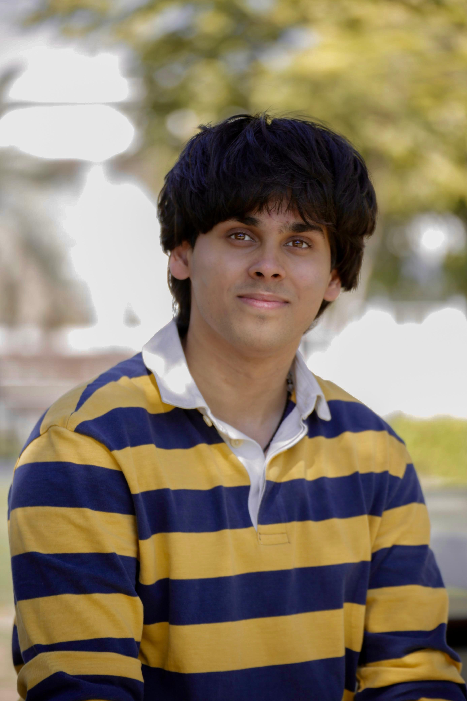

Featured
Neuroanatomy SME Agent
End-to-end RAG-style pipeline and agent for neuroanatomy subject-matter expertise.
IIIT Hyderabad ML Systems Engineering AI for Healthcare
I build production-grade ML systems and research tools — from medical imaging pipelines to retrieval-augmented agents.

I’m a B.Tech (Hons.) ECE student at IIIT Hyderabad, working across ML systems engineering, medical imaging, and human-centered research. I enjoy pushing ideas from research prototypes to production — and building clean tooling that makes teams faster.
Selected builds spanning ML systems, retrieval/agents, vision, and from-scratch implementations.
End-to-end RAG-style pipeline and agent for neuroanatomy subject-matter expertise.
140M-parameter multilingual model for English, Tamil, and Mizo with custom corpus and tokenizer.
Built an embedding + retrieval pipeline with multi-granularity chunk graphs, BioLORD embeddings, hybrid FAISS/Elasticsearch search, and reranking — plus a minimal UI and export toolchain.
Built a 3B-token corpus, trained a 96k unigram tokenizer, and pretrained a 140M-parameter dense LM. Fine-tuned with LoRA on reasoning tasks for controlled editing behavior.
Implemented ViT & DiffViT from scratch in PyTorch on CIFAR-10; reached 84.38% test accuracy, produced DINO maps, and benchmarked 11 configurations.
Code →Built FCN-32/16/8 with VGG-16 backbone + bilinear upsampling; achieved 83.3% test mIoU. Optimized pipelines and batch scheduling for throughput.
Code →Built a hybrid CNN + RNN pipeline with attention for OCR; achieved 99.1% character-level accuracy on a synthetic dataset.
Code →Built a configurable MLP with activations, optimizers, and losses to build intuition for gradient flow and training dynamics.
Code →Five-stage pipelined processor with hazard detection/forwarding; validated with waveform-based testbenches.
Code →Built a Binary Phase Shift Keying (BPSK) audio transmission system over AWGN and noiseless channels, comparing rectangular and raised-cosine pulse shaping for ISI analysis.
Code →Implemented a 4-bit ALU in Verilog, progressed to gate-level simulations in NGSpice, and finalized transistor-level layouts in MAGIC with DRC/LVS-clean designs.
Code →Pangracious, V., Hadj-Alouane, N. B., Chu, Z., Ramakrishnan, R. (2025). Palgrave Macmillan.
Chapter exploring how generative AI and automation are perceived and appropriated across the Gulf Region, with a focus on youth and educational contexts.
Talk on navigating uncertainty, building reflective practices, and engaging critically with emerging technologies as a young adult.
B.Tech Honours in Electronics and Communication
CBSE — Grade 10: 93% • Grade 12: 95%
Advised by Dr. Nimmi Rangaswamy
Studying how young adults bricolage fitness tools and social media practices to form identity, sustain motivation, and protect well-being in gym cultures.
Cloud / MLOps • Production ML
Open to research collaborations, ML systems engineering roles, and building ambitious tools with kind teams.